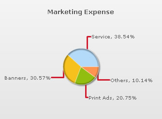
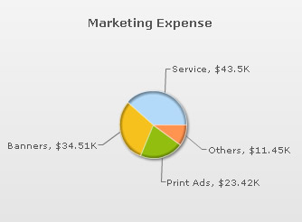
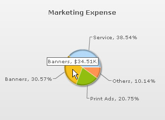
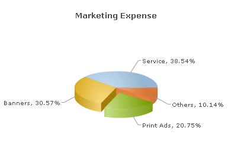

| XML/JSON Attributes for Pie & Doughnut Charts | |||||||||||||||
Pie & doughnut charts are used for showing data composition. Here, you’ll find information on usage of various attributes meant for customizing the functional and aesthetic aspects of pie/doughnut charts. |
|||||||||||||||
|
|||||||||||||||
| Interactive Legend | |||||||||||||||
FusionCharts XT offers interactive legend feature has been added to pie/doughnut charts. The legend is an alternative way of labeling a pie/doughnut chart. As the legend is interactive, clicking on a legend key causes the corresponding pie/doughnut section to slide-out. Re-clicking the same key will cause the pie/doughnut section to slide-in. |
|||||||||||||||
|
|||||||||||||||
The XML/JSON for the above chart looks as under: <chart showvalues="1" caption="Marketing Expense" numberprefix="$" showlegend="1" enablesmartlabels="0" showlabels="0" showpercentvalues="1" > <set value="43500" label="Service"/> <set value="34510" label="Banners"/> <set value="23420" label="Print Ads"/> <set value="11450" label="Others"/> </chart> {
"chart":{
"showvalues":"1",
"caption":"Marketing Expense",
"numberprefix":"$",
"showlegend":"1",
"enablesmartlabels":"0",
"showlabels":"0",
"showpercentvalues":"1"
},
"data":[{
"value":"43500",
"label":"Service"
},
{
"value":"34510",
"label":"Banners"
},
{
"value":"23420",
"label":"Print Ads"
},
{
"value":"11450",
"label":"Others"
}
]
}
|
|||||||||||||||
|
Legend keys are denoted by icons resembling dataplots. So, in case of pie/doughnut charts, the legend key resembles a pie/doughnut. For information on customizing the legends refer to XML/JSON Attributes for Legend. Legends are not displayed by default in pie/doughnut charts, they can be added by declaring the showLegend attribute. <chart showLegend='1'... > | |||||||||||||||
| Smart Labels & Lines | |||||||||||||||
Smart labels help in identifying each sector of the plot. If your chart contains a lot of data then it is better to use smart labels in place of standard labels. Since smart labels are connected to their respective plot sections by a line (called smart line), they make the chart clutter free and easy to read. Smart lines are displayed on pie/doughnut charts by default. | |||||||||||||||
| Skipping Overlap labels | |||||||||||||||
If you have too many labels in your chart then chances are that your chart will look cluttered even with the smart labels. FusionCharts XT prevents this clutter by automatically skipping overlapping labels. This feature is active by default, but it can be disabled by declaring skipOverlapLabels attribute of the <chart> element as shown below: <chart skipOverlapLabels='0'... > |
|||||||||||||||
|
|||||||||||||||
| Managing label display | |||||||||||||||
FusionCharts XT allows label wrapping in pie/doughnut charts. To enable that, you set: <chart manageLabelOverflow='1' ..> By default, this attribute is set to 0. Essentially, use of this attribute causes division of the chart into imaginary quadrants. Data labels are either wrapped or truncated depending on their length and also the quantity of data labels contained in the quadrant. If a quadrant contains many data labels, then long labels will be truncated (with ellipses, and then tool-tips are enabled for that label) and not wrapped owing to unavailability of overhead space. Example: <chart manageLabelOverflow='1' ... > |
|||||||||||||||
|
|||||||||||||||
| Customization of smart line cosmetics | |||||||||||||||
Following attributes can be used for cosmetic customization of smart lines: |
|||||||||||||||
|
|||||||||||||||
Example: |
|||||||||||||||
<chart smartLineColor='D11B2D' smartLineThickness='3' smartLineAlpha='75' isSmartLineSlanted='0'...> |
|||||||||||||||
This yields the following output: |
|||||||||||||||
|  | |||||||||||||||
| Disabling smart labels | |||||||||||||||
If the chart is composed of fewer data items, then you might want to disable the smart lines in order to make the chart bigger. This can be done by declaring the enableSmartLabels attribute in the following way: |
|||||||||||||||
<chart enableSmartLabels='0'...> |
|||||||||||||||
| When the smart labels are switched off, the data labels will be displayed without the smart lines. But if the number of labels increases and smart lines are not being used, then the labels might overlap. | |||||||||||||||
| Different modes of displaying data values | |||||||||||||||
| Data values on charts | |||||||||||||||
You can determine whether you want to display the actual values of the dataplots along with their respective labels or display values converted into percentage. By default, the actual values are displayed as shown in the chart shown below: To show data values in percentage form, you must declare showPercentValues attribute of the <chart> tag. <chart showPercentValues='1' ... > |
|||||||||||||||
Data values in tooltips |
|||||||||||||||
| By default, data values in percentage form are displayed in tooltips. However, it is possible to display actual figures instead of percentage. This is done by deactivating the showPercentInToolTip attribute. | |||||||||||||||
Example: <chart showPercentInToolTip='0'...> This results in:  |
|||||||||||||||
| Slicing and rotation (end-user interactivity) | |||||||||||||||
Pie and doughnut charts support end-user interactivity, the charts can be sliced and rotated through simple mouse actions (this feature is exclusive to pie and doughnut charts). | |||||||||||||||
| |||||||||||||||
|
The user can click a pie/doughnut section to slice it out of the chart, and re-clicking will cause the section to return to its original position. It is also possible to display some pie/doughnut sections as sliced, at the time of rendering. This is done by declaring isSliced attribute of the respective <set> elements. Let's take a look at the following example: <chart caption="Marketing Expense" showPercentValues="1" pieRadius='70'> {
 By default, the chart is in slicing mode, so rotation is not possible. In order to rotate the chart, the chart must be switched to rotation mode which can be done from the chart’s context menu. However, it is also possible to make rotation active by default. This is done by declaring the enableRotation attribute in the following way: |
|||||||||||||||
<chart enableRotation ='1'...> | |||||||||||||||
|
|||||||||||||||
| Rotation and slicing cannot function simultaneously. This means, when you have opted to slice out different slices from your chart, you cannot rotate your chart at the same time. | |||||||||||||||
| Customizing various cosmetic properties of pie/doughnut chart | |||||||||||||||
Customizing the radius |
|||||||||||||||
| FusionCharts XT automatically calculates the best fit pie/doughnut radius for the chart. But, you can configure an optimized pie/doughnut chart by increasing or decreasing its overall radius. To do this, you need to specify the desired radius (in pixels) as the value of pieRadius attribute.
Changing the radius does not affect the size of the chart's background. Example: <chart pieRadius='75'...> | |||||||||||||||
|
|||||||||||||||
Applying bevel effect |
|||||||||||||||
| You can define the 3D radius of chart in percentage using the radius3D attribute. It basically helps you set the bevel distance for the pie/doughnut. This is applicable only if the 3D Lighting Mode is set on by use3DLighting
attribute.
Example: <chart radius3D='90'...> |
|||||||||||||||
|
|||||||||||||||
| Setting the starting angle | |||||||||||||||
A pie/doughnut chart has an internal angular scale, and data is plotted in accordance with this scale. The data that is specified in the first <set> element of your XML or in the first data object of JSON, gets plotted at position 0° on the chart's angular scale. The remaining data-items are plotted after the first one in the order of their listing. FusionCharts XT allows you to change the default position of the first data-item on the angular scale. This means that the first data-item can be positioned at an angle other than 0°. This can be achieved by setting the intended angle (a value between 0-360) as the value for startingAngle attribute. Example: <chart startingAngle ='180'...> | |||||||||||||||
|
|||||||||||||||
Configuring the slicing distance |
|||||||||||||||
| You can customize the slicing action of pie/doughnut charts by setting the distance of the sliced out slices from the center of the chart. To do this, specify the sliced out distance (in pixels) as the value for slicingDistance attribute.
Example: <chart slicingDistance ='20'...> | |||||||||||||||
|